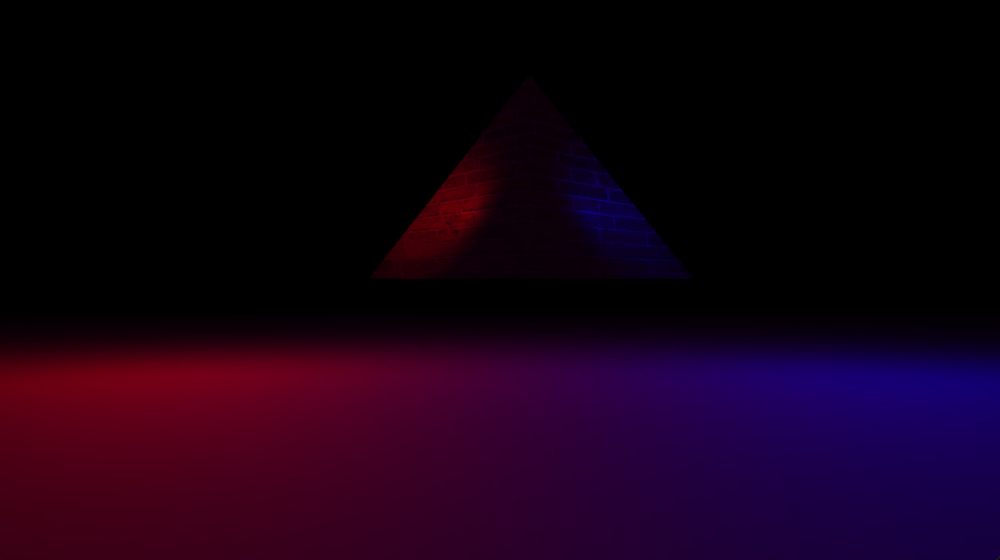

Bio
I’m Marco Michelotti, a game and tool developer with a keen interest in understanding and recreating complex systems. My work spans shading, programming, 3D graphics, and educational roles, where I’ve taught such topics.
I’m passionate about both sharing my knowledge and learning from others in the field. I value collaboration and believe that continuous learning from others is key for my motivation and growth in this ever-evolving industry.
Experiences
-
3D / Programming & Optimization Course Developer (External Businesses)
Developed and delivered specialized courses on 3D, programming, and optimization for external businesses. These courses were tailored to meet the specific needs of each business, focusing on enhancing their team's skills in optimization techniques.
-
Programming & Shading Instructor (BigRock)
At BigRock, I taught the foundations for programming, shading and some rendering. I provided technical guidance to students, helping them build strong foundational skills in C#, HLSL, and 3D software environments.
-
Project Mentor & Manager (Students)
Managed the design, resources, and pipeline for student projects, guiding them through all stages of development. One of these student projects earned recognition by winning Draft Selection and People’s Choice at The Rookies Awards.
Steelsilk Championship. -
UE5 Authorized Instructor Certification
I am a certified Unreal Engine 5 Authorized Instructor, a qualification that demonstrates my expertise in using and teaching Unreal Engine at a professional level. Certification.
Latest Studies
-
Lava Lamp Configurator
Developed a Lava Lamp Configurator using Unreal Engine. The project features technical implementations in ray marching, shading, and blueprint-driven dynamic configuration.
Key Highlights:
- - Implemented multiple HLSL files for ray marching, simulating volumes, depths, and interactions between waxes and liquids.
- - Utilized Unreal Engine’s Material Editor to create PBR volume materials from ray marching data.
- - Developed a blueprint-driven configurator that links physical attributes like size, lighting, and temperature using hash maps.
- - Use substrate materials for a more accurate shading model.
Purhcase on the Unreal Marketplace
-
Wave Function Collapse Algorithm
Designed a 2D Wave Function Collapse Algorithm in C#. This project extends my understanding of data management and algorithms, using functional programming and quantum mechanics.
The algorithm procedurally generates configurations of modules within a grid, allowing for endless combinations. I am currently working on converting this into a 3D version for artists to use in constructing procedural buildings and environments.
-
OpenGL Engine
My first steps towards graphics programming and render engineering. The engine is in constant development and its only purpose is for me to get a deeper understanding on these matters.
It is being built in CPP and using OpenGL as a graphics library. As for now, I implemented:
- Vertex / Index array buffers can load and render meshes
- Shaders to be able to draw vertex fragment and geometry shaders through GLSL external files
- Textures and Materials can be loaded and used on meshes
- Camera to render the frame according to our view matrix
- I/O Callbacks
- Time class
- Model Importer class to import .obj file containing materials and texutres
- Transform class to handle various matrix transformation of each model, like translation, scale and rotation
- Directional / Point / Spot lights
- Directional Shadowmaps and Cubemaps to cast shadows from those very light types
- Skybox to load any HDRI or cubemap for the background
 -
Vulkan Engine
After the OpenGL engine I tried setting up Vulkan API which resulted in a way more challenging project.
Not much has implemented but a good foundation for it to be extended in the future:
- Window using GLFW, allows to link individual window to each VulkanRenderer in the case multiple windows are needed to render (such in the case of a multiplayer client / server project).
- Vulkan Compoennts such as logical and physical device, interface, surface and so on, in order to interface with the GPU.
- Vulkan Validation Layer and debug callback to debug when Vulkan Compoents are not acting like I expected.
- Graphics Pipeline such as swap chain to prepare images, render pass, subpasses, push constant and descriptor sets for shaders, texture samplers, cmd pool and buffer, semaphores and fences, and so on.
- Texture import.
- Mesh creation through vertex and index buffers.
- Model import has been setup but not finished, missing the ASSIMP library implementation.